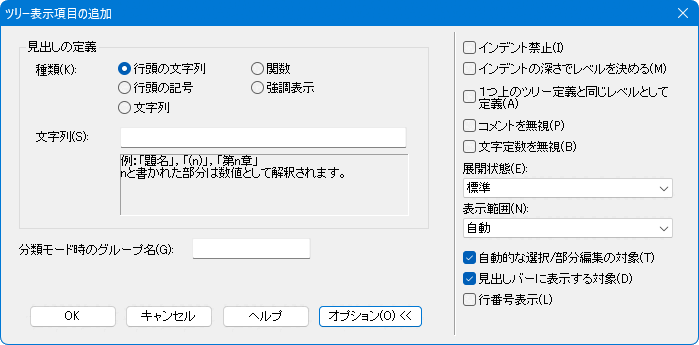

秀丸エディタ Ver.6.00以降では「アウトライン解析の枠」が使用できます。
文書の構造をツリー状に表示したり、分類ごとにまとめたりして表示できます。また、「関数一覧」や「強調表示一覧」も表示できます。
「アウトライン解析の枠」を表示するには、メニューの「表示」から「アウトライン解析の枠」にチェックを入れます。
「アウトライン解析の枠」に各種項目を表示するには設定が必要です。
「ツリー表示」の「通常」や「分類」では、ツリーのレベルや分類を設定します。
「強調表示一覧」では、ファイルタイプ別で設定する強調表示の設定を使用します。
「関数一覧」では、秀丸エディタがファイルを解析し、関数の一覧を自動的に表示します。現状では「言語」の内容は「C言語/Java等」のみしか選ぶことができません。「C言語/Java等」の場合、以下の言語に対応しています。
「アウトライン解析の枠」にどの様に表示されるかを見るため、デフォルトで持っている設定を使ってみます。
メニューの「その他」-「ファイルタイプ別の設定」でダイアログを表示させ、「設定の対象」-「アウトライン」-「解析」を選択し、「アウトライン解析の方法」を「ツリー表示-通常」を選択します。

「リセット」を押すと表示されるメニューから、「"."の数で階層を表す用」を選ぶと、「ツリー表示の定義」が以下のように設定されます。

一時的な設定にするため「保存しないで更新」を押して、「ファイルタイプ別の設定」を閉じ、以下の内容をコピーして設定した秀丸エディタに貼り付けます。
.レベル1-1
表題-１
..レベル2-1
章-1
...レベル3-1
節-1
....レベル4-1
項-1
.....レベル5-1
段落-1
......レベル6-1
その他-1
.レベル1-2
表題-2
..レベル2-2
章-2
...レベル3-2
節-2
....レベル4-2
項-2
.....レベル5-2
段落-2
......レベル6-2
その他-2設定内容に従い「アウトライン解析の枠」にツリー状の構成が表示されます。

簡単ですが「アウトライン解析の枠」の「ツリー表示」の例になります。「アウトライン解析の枠」の各項目をクリックすると、その行にカーソルが移動したり各項目内をすべて範囲選択する等、操作が可能になります。(例は1行なのであまり意味は無いですが…)
アウトライン解析で「ツリー表示の定義」を設定すると、「折りたたみ」「見出し」「部分編集」ができるようになります。「第II部〜知っていると便利な秀丸の機能 アウトライン関連 見出し・折りたたみ・部分編集」を参照。
「ツリー表示の定義」の設定について解説します。
まず、「ツリー表示の定義」の「レベル1」を選択し「プロパティ」を押して、設定画面を表示させます。
初期状態は「オプション」が閉じられた状態で表示されますが、「オプション」ボタンを押す事でオプション設定部分の表示/非表示を切り替える事が出来ます。

ここの「見出しの定義」とオプションの「表示範囲」でツリーに表示される内容が決まります。
行頭にある指定された文字列を見出しとして解釈します。
「とりあえず使ってみよう」で使用した「"."の数で階層を表す用」 は、この設定になります。
文字列内の"n"は、数値としても解釈されます。
(n) --> (1)、(10)、(100)
第n章 --> 第1章、第10章、第100章
n.n --> 1.2、2.1、3.4"n"は半角数字しか認識しません。全角や漢字を含めたい場合は「文字列」にして「正規表現」を使ってください。
"n"を使った設定例
ツリー定義：
実際の表示：
設定した文字のいずれかを見出しとして解釈します。(設定した内容を文字集合として扱う)
#%& --> "#" or "%" or "&" のいずれかの文字を見出しと認識する「ツリーの操作」で「レベルの操作」を行った場合は、先頭の文字を使います。
設定例
ツリー定義：

実際の表示：
設定した文字列を見出しとして解釈します。以下のオプションが選択可能です。
正規表現をONした場合、分類モード時のグループ名に正規表現タグを指定できます。「ツリー表示の分類について」を参照してください。
強調表示されている行を見出しとして解釈します。

「行頭の文字列」と「行頭の記号」のみに設定可能な項目。見出しに設定した文字列/記号の前に、タブ文字や空白文字を認めない場合は設定します。
例)OFFの場合は、「レベル1-3」を見出しと認識する。(ONの場合は認識しない)
前の見出しとの比べて、インデントが深ければ１つ下のレベルになります。
「ツリー表示の定義」の「レベルの見せ方」が「絶対的」になっていると、この指定は無効です。
実際に設定してみます。「追加」ボタンを押して、現状の設定に以下の内容を追加します。
一時的な設定にするため「保存しないで更新」を押して、閉じます。
「レベル2-1」に以下の内容を追加します
- aaaa
* bbbb
「レベルの見せ方」が「絶対的」になっている為、レベル7の見出しとして認識されます。ここで設定を「絶対的」から「相対的」に変更します。
「ツリー表示の定義」画面にある「ツリーの動作」をクリックすると、設定画面が開きます。
ここで、レベルの見せ方を、「相対的」に変更します。

一時的な設定にするため「保存しないで更新」を押して、閉じます。
「絶対的」な場合と表示状態が変化しましたが、これは直ぐ上の見出しとレベルの比較を行い、レベルが低ければ「下位レベル」と判断している(レベル7とは認識しない)からです。さらに、"bbbb" は、"aaaa" より、インデントが深くなっている為、さらに下位と判断されます。
やっと、オプションの説明になります。
ONの場合認識
├レベル2-1
│└aaaa レベル2より低いレベルなので1段下げ
│ └bbbb インデントの深さより、"aaaa" より低いレベルなので1段下げOFFの場合認識
├レベル2-1
│├aaaa レベル2より低いレベルなので1段下げ
│└bbbb インデントの深さは関係ないので、"aaaa" と同じレベルこのチェックがONの場合、インデントだけで、レベルを決める事が出来ます。
「追加」していくと上のレベルから順番に定義されていきます。「インデントの深さでレベルを決める」の説明で追加した項目は、「レベル7」になっています。
このオプションを「ON」にすると、「一つ上のツリー定義と同じレベル」になります。この場合は「レベル6」。"LV"の項目が空白なのは一つ上と同じという意味。
通常は「一つのレベルに対し定義は1個」という状態ですが、このチェックをONにする事で「一つのレベルに対し定義を複数個」設定する事が出来ます。
ツリー表示の状態を設定します。
見出しを表示する範囲を決めます。
以下の場合に適用されます。
以下の選択ができます。
自動
ヒットした文字以降
ヒットした文字より後
ヒットした文字のみ
行全体
(この例では「ヒットした文字以降」と同じ)
次の行全体
ツリーに表示する内容を任意の部分だけにしたい場合は、「見出しの定義」を「文字列」にして、正規表現を使います。後読み(先頭にある記号の指定等)と先読み(表示したくない後方部分を指定)を使うか、ヒットした扱いにするタグ指定を使います。そして「表示範囲」を「ヒットした文字のみ」にすれば、任意部分のみ表示可能になります。
ONの場合、以下の状態に影響があります。
「分類モード時のグループ名」を入力しておくと「ツリー表示-分類」が使用できます。

現状の設定にグループ名を追加してみます。
「ツリー表示-分類」に変更すると、表示が以下のように設定したグループ名毎になります。
「見出しの定義」で「文字列」を選択し「正規表現」を有効にした場合、グループ名に正規表現でマッチしたタグを指定できます。
「アウトライン解析の枠」で、見出しの項目を選択すると、右クリックメニューでツリーの単位の操作が可能です。

例えば「切り抜き」ですが、選択した見出し下にあるツリーも対象になります。
実行前
├レベル1-1
│└レベル2-1
│ └レベル3-1 <----ここを選択し、「切り抜き」を実行すると下のツリーも対象になる。
│ └レベル4-1
│ └レベル5-1
│ └レベル6-1
├レベル1-2「切り抜き」実行後
├レベル1-1
│└レベル2-1
├レベル1-2「コピー」や「範囲選択」も同様に、ツリー構造になっている場合は、選択以下のツリーも対象になります。
「上に挿入」/「下に挿入」は、選択した見出しの上か下に、指定したレベルの見出しを追加可能です。

「ツリー操作」では、見出しのレベル上げたり、下げたりも可能です。「ツリーそのものをコピー」では「アウトライン解析の枠」の内容をクリップボードにコピーします。ツリーの場合は罫線(?)ではなく、レベルの数だけTABコード(0x09)が入ります。